Insight Gallery
Projects I enjoy thinking about and building. Click a part to open it.
1E-Lake: watching swimmers with a drone
Let us imagine a stormy day where swimmers decide to swim in a lake. We need to watch them in case they need help. We do it with a drone that always locates the swimmers and checks if their behaviour is normal or if they need help.
But data collection is hard here. Finding a stormy lake and people who are willing to swim in it is not always possible. So let us build an electronic lake (E-Lake)! First we need a texture of stormy water. We use a free texture file (thanks to Jorge Vasconez for making it available):

Next we need a few people to swim in our lake. We take them from the animated figures of [1], which are free with an account.

This is the result of embedding the animated swimmers into a 3D model of E-Lake using [2]:

With [3] we see that our swimmers are sometimes falsely classified as kite (green), bird (blue) and also person (white). This shows that the Mask R-CNN pre-trained on the MS COCO dataset [4] fails to watch the swimmers in our E-Lake.
Qt GUI
To make the whole pipeline a product, we also train YOLO models to see if they are faster than Mask R-CNN. Below is the GUI, developed with Qt and C++.

Future plan
We train YOLO models and Mask R-CNN to compare tracking quality and the speed of swimmer localisation and classification while they enjoy our E-Lake. In a real scenario, a drone runs the model, flies over a real lake and watches if swimmers need help or move in a suspicious pattern. This is critical to keep swimmers from drowning.
References
- www.mixamo.com
- clara.io
- K. He, G. Gkioxari, P. Dollár, R. Girshick. Mask R-CNN. arXiv, 2017. doi:10.48550/ARXIV.1703.06870
- cocodataset.org
2StyleGAN2 swimmers: more training data
Another part of my work is to enlarge existing datasets, because collecting images of swimmers is technically hard. One solution is to use StyleGAN2 [1] to enlarge the Swimmer dataset [2] from Kaggle. Below are synthetic samples that show the swimming styles realistically: back stroke, breast stroke, free style and butterfly.

A small set of original images was used to make the synthetic images above:


References
3Temperature prediction in 3D printing
Our aim was to simulate the movement of the laser nozzle during printing in laser powder-bed fusion (LPBF) [1]. A controlled nozzle movement lets us predict the temperature gradient during printing, so that the final product does not deform because of an uneven temperature distribution across the printing board.
To steer the nozzle, one can first use a predefined trajectory: row-wise, zig-zag or square-based, as shown below.

A better solution, which we adopted, applies the travelling salesman problem (TSP) to minimise a cost function based on the temperature gradient:

Here $u_m$ and $\nabla u_m$ are the temperature and its gradient for the $m$-th movement of the nozzle, and $u_g$ is the desired temperature on a sub-area of the printing domain. We show that TSP gives an optimal cost value compared to the predefined trajectories:

Below are a few instances where TSP decides the $5$ adjacent movements of the nozzle.


References
- A. Strauch, C. Hardes, A. Röttger, V. Uhlenwinkel, A. Baqerzadeh Chehreh, W. Theisen, F. Walther, H. Zoch. Laser additive manufacturing of hot work tool steel by means of a starting powder containing partly spherical pure elements and ferroalloys. Procedia CIRP 94, pp. 46–51, 2020.
4Stiffer 3D-printed parts by Hamilton-Jacobi skeletonization
How can we make a printed part stiffer without designing the inner ribs by hand? Our idea is to let the geometry of the shape decide. We compute the distance of each pixel to the boundary and take the Hamilton-Jacobi skeleton of the shape [1, 3], i.e. the thin lines in the middle of the shape. Merging this skeleton with the shape boundary gives a printable support structure. The method is practically parameter-free [2].
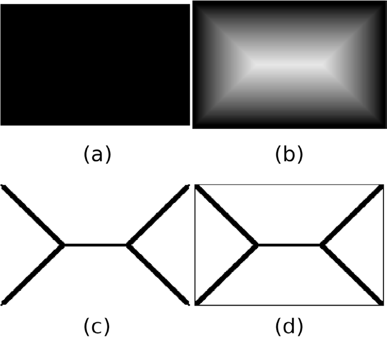
We applied it to a corner knot of a machine frame. FEM simulation in Abaqus showed that the knot works like a linear axis with a spring: it carries 100 N in x and y without plastic deformation, while it stays almost fixed in the guiding direction.
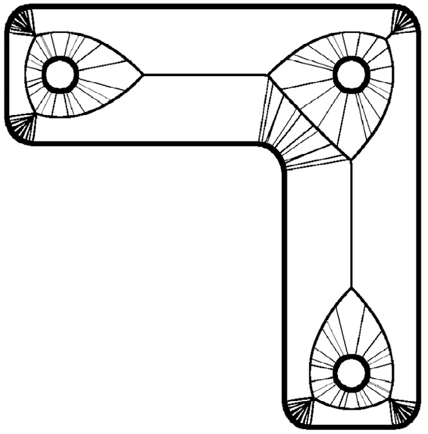
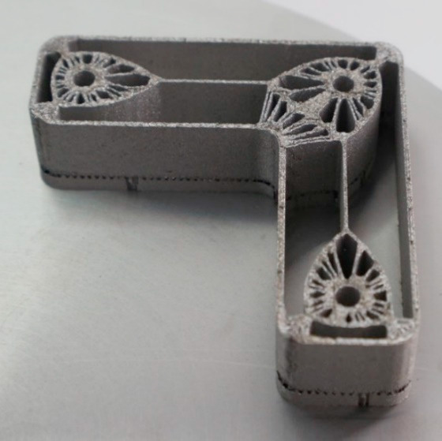
Figures from [2], open access under the CC BY-NC-ND 4.0 license.
References
- K. Siddiqi, S. Bouix, A. Tannenbaum, S. W. Zucker. Hamilton-Jacobi Skeletons. International Journal of Computer Vision 48(3), pp. 215–231, 2002.
- M. Breuß, J. Buhl, A. Mansouri Yarahmadi, M. Bambach, P. Peter. A Simple Approach to Stiffness Enhancement of a Printable Shape by Hamilton-Jacobi Skeletonization. Procedia Manufacturing 47, pp. 1190–1196, 2020. doi:10.1016/j.promfg.2020.04.147
- P. Peter, M. Breuß. Refined Homotopic Thinning Algorithms and Quality Measures for Skeletonisation Methods. In: Innovations for Shape Analysis, pp. 77–92, Springer, 2013.
5Cloud detection in Sentinel-2 images
In contrast to AI-based methods, we devised a very quick, explainable and canonical approach to detect clouds in optical remote sensing images, using the multi-spectral images of Sentinel-2.
The dataset PASTIS [1] has $2433$ patches of one square kilometre (see below), each of size $128\times 128$, taken from metropolitan France. For each patch, a sequence of satellite observations is assembled into a four-dimensional spatio-temporal tensor.


We use only one band for now, but fusing other useful spectral bands can give a more effective method. We took a subset of PASTIS and visualised it in two dimensions with t-SNE [2]. The dimensionally reduced images separate clearly:

Below are samples from each cluster: clouds (first row) and agricultural parcels and water (second row).


References
- V. Sainte Fare Garnot, L. Landrieu. Panoptic segmentation of satellite image time series with convolutional temporal attention networks. ICCV, 2021.
- T. T. Cai, R. Ma. Theoretical foundations of t-SNE for visualizing high-dimensional clustered data, 2022.
6YOLO in an Industry 4.0 model factory
Can a camera follow the work pieces through a factory, even when the light, focus or image quality changes? We studied this question on a Fischertechnik learning factory with five modules: sorting machine, oven, milling machine, high-bay warehouse and vacuum gripper [1].
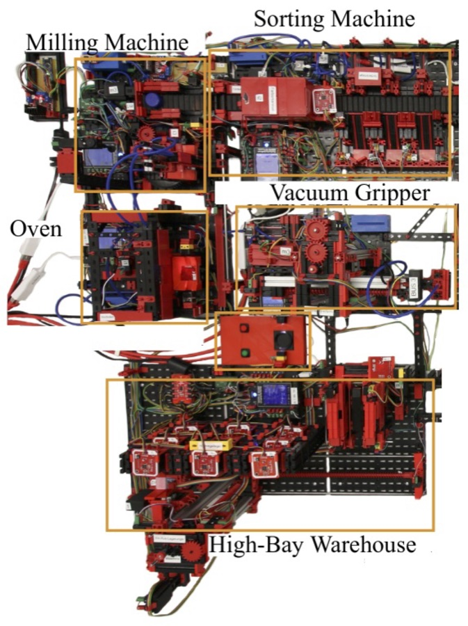
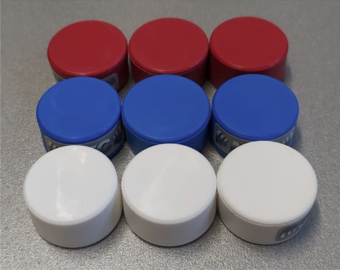
The hard part is colour: the red pieces have almost the same colour as the factory, and the blue ones partly too. We recorded 700 images with a webcam and labelled 1200 work pieces. Each colour appears exactly 400 times, spread over seven balanced batches, so that no colour biases the training.
To simulate real factory conditions, we made six augmented copies of each image: Gaussian blur, brightness, linear contrast, motion blur, noise and sharpness. This gave 4900 images. We then trained and compared four detectors, YOLOv3 and YOLOv5 in small and large size, with two train and test strategies.
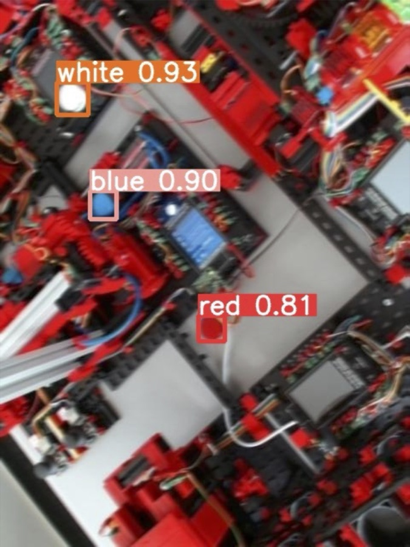
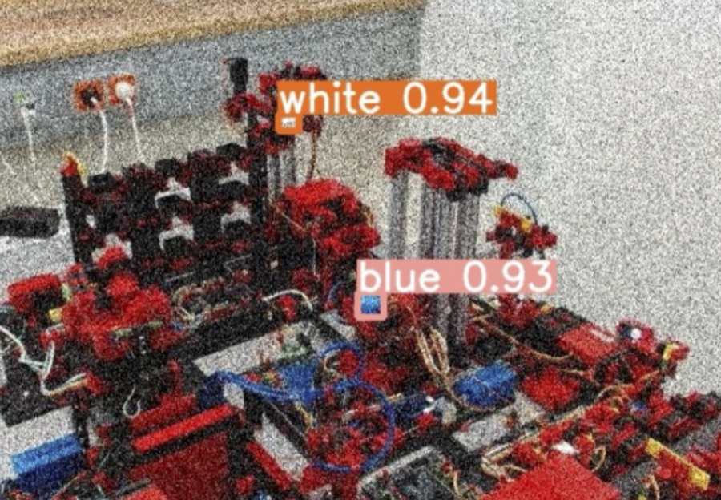
Result: YOLOv3l was the most practical model, especially for the difficult red pieces. With brightness, contrast and sharpness changes it reached close to 80% mAP@[0.5:0.95]. Strong Gaussian or motion blur still caused false detections, so these remain the weak point.
Figures from [1].
References
- S. Schneidereit, A. Mansouri Yarahmadi, T. Schneidereit, M. Breuß, M. Gebauer. YOLO-based Object Detection in Industry 4.0 Fischertechnik Model Environment. arXiv:2301.12827, 2023. arxiv.org/abs/2301.12827
7The convex / concave ambiguity in shape from shading
Shape from shading (SFS) recovers the 3D shape of a surface from a single image, using only how bright each point appears. In the classic setup of Horn, with an orthographic camera and light from far away, there is a famous problem: a mound seen from above can look exactly like a cavity of the same form.


The convex hemisphere $u(x,y)=-\sqrt{R^2-x^2-y^2}$ (left) and the concave hemisphere $u(x,y)=+\sqrt{R^2-x^2-y^2}$ (right), each with an arbitrarily chosen point $\left(x_1,y_1,u(x_1,y_1)\right)$ in the third quarter on its surface. An orthographic camera looks from infinity along the positive $z$ axis and observes the same angle $\theta$ between the reflected light and the corresponding normals $(\nabla u, 1)$ at the chosen points. If the surface is Lambertian, the reflected irradiance from the convex and the concave surface at $\left(x_1,y_1,u(x_1,y_1)\right)$ is the same, so it is ambiguous which geometry the surface has at that point.
Does a real camera remove the ambiguity?
Real cameras use perspective projection, and perspective SFS models were expected to be better posed. We showed for the first time that a perspective model can have the same ambiguity [1]. We use a pinhole camera, a Lambertian surface and a light source at the projection centre. Written in spherical coordinates, the perspective SFS equation takes exactly the same form as Horn's classic eikonal equation, so the classic mechanism of the ambiguity carries over.
To show it, we start from a concave, hat-shaped curve (black), compute its brightness signal, and solve the eikonal equation numerically with that signal as input. The solver returns a different, convex curve (red):
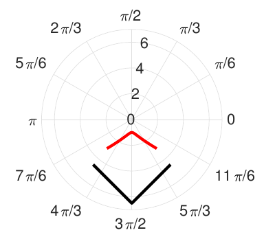
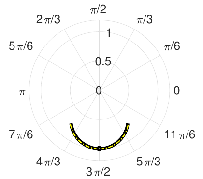
The two curves have nearly the same brightness, so the image alone cannot tell them apart. A free shift of the radius gives even more convex solutions with the same signal. The construction extends from signals to full images; the next step is to find ways to resolve the ambiguity.
Figures from [1].
References
- M. Breuß, A. Mansouri Yarahmadi, D. W. Cunningham. The Convex-Concave Ambiguity in Perspective Shape from Shading. Proceedings of the OAGM Workshop 2018, pp. 57–63. doi:10.3217/978-3-85125-603-1-13
8Energy-efficient driving styles from GPS logs alone
The driving style has a large effect on fuel consumption. A hybrid car that knows how its driver drives could use its electric engine more efficiently. But special sensors are expensive, so we asked: can we tell calm from racy drivers using only GPS positions, which every navigation system records [1]?
From positions over time we get velocity, acceleration and the jerk, the change of acceleration. A calm driver changes speed smoothly, a racy driver abruptly. The difficulty is that real GPS logs are noisy, incomplete and inconsistent, and a single bad position creates a huge jerk:
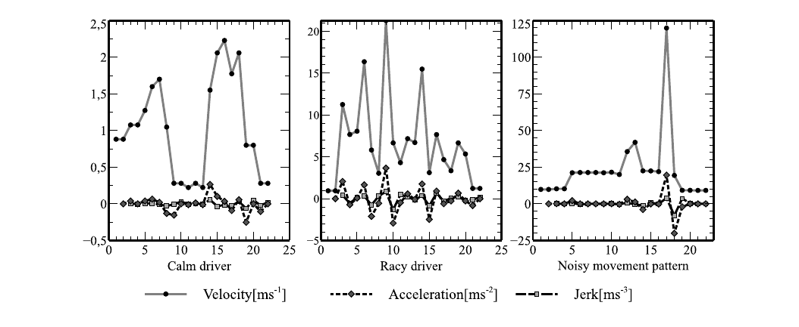
We therefore designed a single robust feature $\omega$, based on an exponential of the jerk. Compared with the mean, the standard deviation and an earlier jerk method [2], $\omega$ rises smoothly over all patterns and ends in a clear elbow, which marks the noisy patterns:
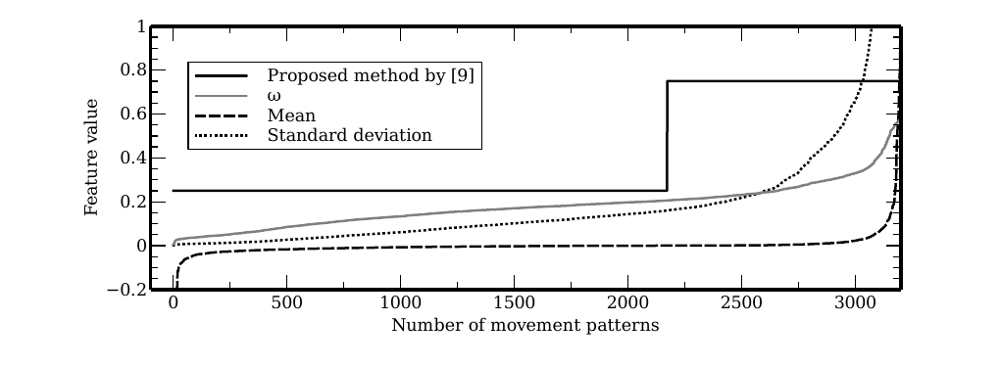
We tested it on the T-Drive data of more than 10,000 Beijing taxis [3]: 17 million GPS logs and about 9 million kilometres. After preprocessing, this gave 3225 movement patterns in the city centre and 106 on a freeway. Agglomerative hierarchical clustering with an L-curve heuristic chose four clusters, confirmed by silhouette indices.
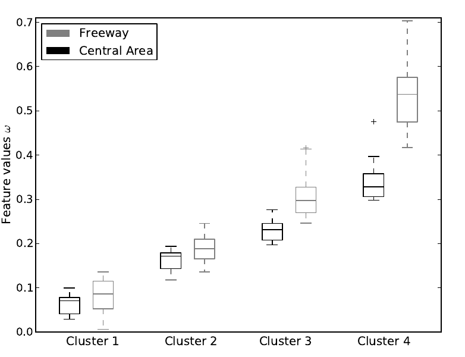
Result: GPS logs alone are enough to separate driving styles by energy use, and the noise lands in its own cluster. The more data, the cleaner the separation, which fits an industrial setting with navigation systems.
Figures from [1]. Funded by the German Federal Ministry of Education and Research (RESY, 05M13ICC).
References
- M. Breuß, L. Hoeltgen, A. Sharifi Boroujerdi, A. Mansouri Yarahmadi. Highly Robust Clustering of GPS Driver Data for Energy Efficient Driving Style Modelling. arXiv:1610.02815, 2016. arxiv.org/abs/1610.02815
- Y. L. Murphey, R. Milton, L. Kiliaris. Driver's style classification using jerk analysis. IEEE Workshop on Computational Intelligence in Vehicles and Vehicular Systems, pp. 23–28, 2009.
- J. Yuan, Y. Zheng, C. Zhang, W. Xie, X. Xie, Y. Huang. T-Drive: Driving directions based on taxi trajectories. ACM SIGSPATIAL GIS, pp. 99–108, 2010.
9E-mail summarization with LLMs and C#
We used the Enron e-mail dataset, which contains about 500,000 e-mails written by employees of the Enron Corporation [1]. We developed a GUI in C# and used Ollama in the background to run open-source large language models. The user sees a list of e-mails and can let an LLM write a short summary of each e-mail body.

The application is very useful when a user must read a large volume of e-mails every day.